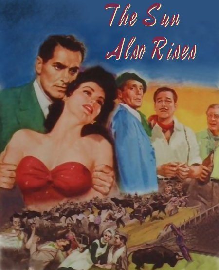
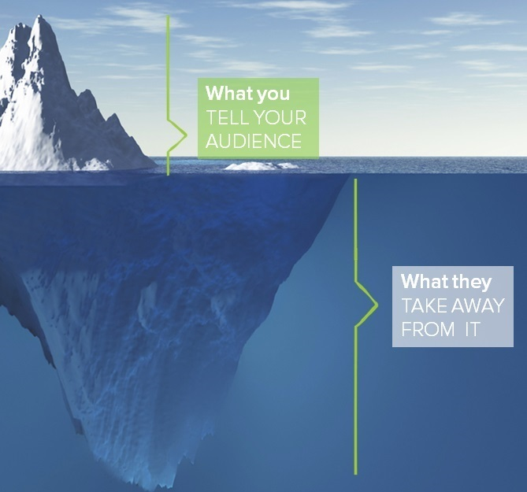

chapter1.1--handout
Background Information
About the author
欧内斯特·米勒·海明威（Ernest Miller Hemingway，1899年7月21日－1961年7月2日），出生于美国伊利诺伊州芝加哥市郊区奥克帕克，美国作家、记者，被认为是20世纪最著名的小说家之一。
孩童时代的海明威喜欢读图画书和动物漫画，听各类型的故事。还承袭了父亲的兴趣，如打猎、钓鱼、在森林和湖泊中露营等。自高中起，海明威在写作上的天赋就已经崭露头角，因此18岁高中毕业时，又因为不愿意读大学，所以他便直接到了报社当记者开始写作生涯。
1918年，第一次世界大战爆发后，海明威不顾父亲的反对，辞掉了记者一职，并尝试加入美国军队以观察第一次世界大战的战斗情况。但是由于视力缺陷导致体检不及格，他最后被调到红十字会担任救护车司机。这段经历让海明威目睹了战争的残酷，他早期的小说《永别了，武器》（Farewell to Arms）的创作灵感便来源于此。
1921年，海明威娶了他的第一任妻子——哈德莉·理察逊（Hadley Richardson），并在9月迁到了芝加哥北部的三层公寓居住。到12月，海明威一家迁出国外。在巴黎居住的期间，海明威创作了《在我们的时代里》、《太阳照常升起》等作品。
离婚后，他迎娶了第二任妻子——宝琳·费孚（Pauline Pfeiffer），举家回到美国，过上了宁静的田园生活。

1937年至1938年，他以战地记者的身份奔波于西班牙内战（Spanish Civil War）前线，创作了以美国人参加西班牙人民反法西斯战争为题材的长篇小说《丧钟为谁而鸣》（1940）。在第二次世界大战期间，他也作为记者随军行动，并参加了解放巴黎的战斗。
战后海明威客居古巴，潜心写作。1952年，《老人与海》问世，深受好评，翌年获普利策奖（Pulitzer Prize）. 1954年获贝尔文学奖。卡斯特罗掌权后，他离开古巴返美定居。因身上多处旧伤，百病缠身，精神忧郁，1961年7月2日用猎枪自杀。
About the book
《太阳照常升起》是海明威创作的第一部长篇小说，书名来自于扉页摘抄的《圣经》“传道书”中的经文：
One generation passeth away, and another generation cometh: but the earth abideth for ever.
The sun also ariseth, and the sun goeth down, and hasteth to his place where he arose.
一代过去、一代又来，地却永远长存。
日头出来、日头落下、急归所出之地。
The wind goeth toward the south, and turneth about unto the north; it whirleth about continually, and the wind returneth again according to his circuits.
风往南刮、又向北转、不住的旋转、而且返回转行原道。
All the rivers run into the sea; yet the sea is not full; unto the place from whence the rivers come, thither they return again.
江河都往海里流、海却不满．江河从何处流、仍归还何处。
小说本身以1924年至1925年这一历史时段和名城巴黎为背景，故事的主人公都在感情上遭受过创伤，或者因为战争而落下心理或生理机能障碍。作者描绘了他们在失落和绝望中放浪形骸，向醉生梦死、浮躁喧闹的生活方式寻求刺激和慰藉的精神状态，同时也展现了他们在一边愤世嫉俗一边寻求出路的努力。
故事的主要情节是美国青年巴恩斯（Jake Barnes）在第一次世界大战中脊椎受伤，失去性能力，战后在巴黎任记者时与英国人阿施利夫人（Lady Brett Ashley）相爱，夫人一味追求享乐，而他只能借酒浇愁。两人和一帮男女朋友去西班牙潘普洛纳（Pamplona）参加斗牛节，追求精神刺激。夫人拒绝了犹太青年科恩（Robert Cohn）的苦苦追求，却迷上了年仅十九岁的斗牛士罗梅罗（Romero）. 然而，在相处了一段日子以后，由于双方年龄实在悬殊，而阿施利夫人又不忍心毁掉纯洁青年的前程，这段恋情黯然告终。夫人最终回到了巴恩斯身边，尽管双方都清楚，彼此永远也不能真正地结合在一起。

借这本书，海明威成为了名副其实“迷惘的一代”的代言人，并以此书开创了海明威式的独特文风。关于“迷惘的一代”（The Lost Generation），这个称呼首先是美国文学评论家格特鲁德·斯坦因（Gertrude Stein）提出的对于第一次世界大战到第二次世界大战期间出现的美国一类作家的总称。《太阳照常升起》扉页上的题词就是她写的："You are all a lost generation"（你们都是迷惘的一代。）
“迷惘的一代”共同表现出的是对美国社会发展的一种失望和不满。他们之所以迷惘，是因为这一代人的传统价值观念完全不再适合战后的世界，可是他们又找不到新的生活准则。他们认为，只有现实才是真理，可现实是残酷的。于是他们只能按照自己的本能和感官行事，竭力反叛以前的理想和价值观，用叛逆思想和行为来表达他们对现实的不满。
但《太阳照常升起》不仅是“迷惘的一代”的代言作，对于今天身处迷惘以及有前卫和逆反青年、渴望独创艺术以及更加开放的心灵空间的读者来说，这本书也会让他们找到共鸣。
Vocabulary
counteract
vt. 抵消；中和；阻碍 (to reduce or prevent the bad effect of something)
原文：He cared nothing for boxing, in fact he disliked it, but he learned it painfully and thoroughly to counteract the feeling of inferiority and shyness he had felt on being treated as a Jew at Princeton.
他对拳击一点也不爱好，实际他很讨厌拳击，但是他仍然痛苦而一丝不苟地学打拳，以此来抵消在普林斯顿大学被作为犹太人对待时所感到的低人一等和羞怯的心情。
💧counteract 表示“抵消”，指做一件事为了减少或防止另一件事产生的不利影响（to do sth to reduce or prevent the bad or harmful effects of sth）, 相当于counter. 比如：These exercises aim to counteract/counter the effects of stress and tension.
这些训练旨在抵消压力与紧张的影响。
exploitation
n. 开发；剥削；利用 (the development; the use of something; a situation in which you treat someone unfairly)
...and her attitude toward Robert changed from one of careless possession and exploitation to the absolute determination that he should marry her.
一反过去漫不经心地掌握并利用科恩的常态，断然决定他必须娶她。
💧exploitation可以指贬义上的“剥削，利用”，也可以指中性意义上的“开发，开采”，比如：the controlled exploitation of resources（有节制的资源开发）
Crush Your Problems
1、He was Spider Kelly's star pupil.
他是斯拜德·凯利的得意门生。
💧表达精讲
star pupil “得意门生”，star指“最优秀（或出色、成功）者 ”，比如班里的尖子生除了可以表示为grade A student, 也可以直接用star来指代：Paula is the star of the class.（葆拉是班里的尖子。）
💧知识拓展
Spider Kelly的原名是Tommy "Spider" Kelly (1867.9.6 – 1927.1.4），来自纽约的黑人区（Harlem, New York）, 因此大家也会把他称作“The Harlem Spider”. 在1890到1892之间，他都是最轻量级拳击手中的世界冠军（the world champion bantamweight fighter）.
2、Spider Kelly taught all his young gentlemen to box like featherweights, no matter whether they weighed one hundred and five or two hundred and five pounds.
不管这些年轻人的体重是一百零五榜，还是二百零五磅，斯拜德·凯利都把他们当作次轻量级拳击手来教。
💧知识拓展
拳击比赛可以分为17个具体的体重级别，Spider Kelly属于的是Bantamweight（“最轻量级”），bantam这个词原本指“矮脚鸡”，体重在112到118磅之间（约51到54公斤）的拳击手属于这个级别；而Featherweight则是“羽量级”，这一级别的拳击手体重在118到126磅（约54到57公斤）之间。Cohnn本身是属于Middleweight “中量级”的（Robert Cohn was once middleweight boxing champion of Princeton），体重约在73公斤以下。
3、He was so good that Spider promptly overmatched him and got his nose permanently flattened.
他学得很好，斯拜德马上安排他跟强手交锋，给他终生留下了一个扁平的鼻子。
💧表达精讲
①overmatch的本义是指“比……强”，比如be a match for表示“旗鼓相当”，而overmatch就是to be more than a match for.
但是这里的overmatch并不是指Spider比Cohn厉害然后把他的鼻子打扁了；在体育术语里，overmatch指“为……安排强手”（to match with a superior opponent）. 所以这里是Spider看到Cohn学得很优秀，所以马上让他跟高手过招。
②flatten从“使变平”这个意思还可以引申为“夷为平地，炸平”，相当于level. 比如：Hundreds of homes were flattened/levelled by the tornado. 数百户住宅被龙卷风夷为平地。
4、This increased Cohn's distaste for boxing, but it gave him a certain satisfaction of some strange sort, and it certainly improved his nose.
这件事增加了科恩对拳击的反感，但也给了他某种异样的满足，也确实使他的鼻子变得好看了些。
💧表达精讲
improved his nose “使他的鼻子变得好看了些”；improve笼统地表示to make sth better, 但是用在具体的语境里有不同的含义，比如：Many wines improve with age. 这里的improve就是指酒更香醇了。
💧知识拓展
为什么把鼻子打扁了些反而还好看了呢？这其实源于对犹太人面部特征的刻板印象。在13世纪中叶的欧洲，犹太人的鹰钩鼻（hooked noses）往往在画作里被过度渲染成充满敌意的样子（singled out as a hostile caricature），以致于后来一提到犹太人，大家就觉得他们都是鼻梁突起高耸、然后鼻头向下弯。Cohn在大学的时候遭受嘲笑也多半是因为这个，现在鼻子扁了一点，他反而感到庆幸。
5、I mistrust all frank and simple people, especially when their stories hold together...
我对所有坦率、朴实的人向来信不过，尤其是当他们讲的故事没有漏洞的时候……
💧表达精讲
hold together本义指“完好无损的”（to stay in one piece），比如：The empire held together for many decades.（这个帝国已经完好矗立几十年了。）
hold together在这里指故事“逻辑完整、无懈可击的”。
6、He was married five years, / had three children, / lost most of the fifty thousand dollars his father left him, / the balance of the estate having gone to his mother, / hardened into a rather unattractive mould under domestic unhappiness with a rich wife...
他结婚五年，生了三个孩子，父亲留给他的五万美元几乎挥霍殆尽（遗产的其余部分归他母亲所有），由于和有钱的妻子过着不幸的家庭生活，他变得冷漠无情、使人讨厌……
💧句式拆解
①首先来看这个句子主体部分的谓语有哪些：He was married..., had..., lost..., hardened into...（注意这里没有按照通常的语法规则用and作连接）；
②the balance of the estate having gone to his mother 属于独立主格结构（在盖茨比当中出现过不只一次哦~）整个句子本身的主语是he（Cohn），这里出现了the balance of the estate作主语，后面则是having gone的现在分词短语作伴随状语；因为主语不同，所以整个结构都是可以独立在句子之外来看的；
💧表达精讲
①the balance of the estate “遗产的其余部分”；estate常见指“庄园，住宅”，但在这里是“个人全部财产（尤指遗产）”；balance表示“剩余（部分）”，也就是the rest. 比如：The firm owns about 96% of the portfolio, with the balance belonging to our family. （资产组合中，公司拥有96%左右的股份，剩余部分为我们家族所有。）
再补充一个知识点，balance从“剩余”这个含义还延伸出了很多日常惯用表达，比如表示“银行账户余额”：My bank balance isn’t good.（我的银行账户里余额不多了。）
还可以用来指“假期余额”: The balance of my annual leave still has 5 days.（我剩下的年假还有5天。
②harden into 指“变得冷酷无情”（to become less sympathetic and gentle）, 比如：Her years of drunken bickering hardened my heart.（她常年醉酒吵闹让我的心麻木了。）
③a rather unattractive mould “讨人厌的类型”；mould本义是“模具”，在这里指“人的气质类型”（type of person）. 比如：a hero in the ‘Superman’ mould（“超人”型的英雄）
7、He had been taken in hand by a lady who hoped to rise with the magazine.
他已经被一位指望跟这家杂志一起飞黄腾达的女士捏在手心里了。
💧表达精讲
had been taken in hand “被捏在手心里”，take sb in hand也就是“掌控、支配某人”，hand在这里相当于control. 比如a manager with a firm hand表示“一位手段强硬（管理严格）的经理”。
8、I rather liked him and evidently she led him quite a life.
我挺喜欢他，可弗朗西丝显然弄得他的日子很不好过。
💧表达精讲
quite a life 在这里有讽刺、调侃的意味，暗指quite a bad/terrible life；通常quite用于强调后面的名词有不寻常的地方（一般是正面的），比如：That was quite a party you had.（你的聚会搞得非常不错。）但这里结合语境应是在说反话。
Content Analysis
和《了不起的盖茨比》相同，《太阳照常升起》也是以第一人称的口吻来写的，叙述者是Jake Barnes. 在一开篇，Jake没有交代自己的背景，而是先介绍了另一位主人公Robert Cohn. 根据Jake的描述，他们是Cohn再婚后搬到欧洲才认识的。Jake也是Cohn在法国唯二的朋友之一，俩人是网球的球友（During these three years, the first spent in travel, the last two in Paris, Robert Cohn had two friends, Braddocks and myself. Braddocks was his literary friend. I was his tennis friend）.
Cohn是一个非常有意思的人物，他的身上有很多矛盾点，比如他因为犹太人的身份在大学时期受到种族歧视而很怨愤，当通过学习拳击可以把那些目空一切的人击倒的时候，他的心里才稍微获得了一点平衡感，但他也只敢在拳击场上这么做（being very shy and a thoroughly nice boy, he never fought except in the gym）. 这种自卑感也影响到了他后来的择偶和婚姻——
💧Clue 1: Cohn has been feeling inferior as being Jewish.
Evidence 1:He took it out in boxing, and he came out of Princeton with painful self-consciousness and the flattened nose, and was married by the first girl who was nice to him.
他在拳击中发泄这种情绪，他带着痛苦的自我意识和扁平的鼻子离开普林斯顿大学，碰到第一个待他好的姑娘就结了婚。
这个“待他好”的姑娘是否真的如此呢？下文提到了他的婚姻生活并不幸福：(he) hardened into a rather unattractive mould under domestic unhappiness with a rich wife. 这里面有两个细节，首先是他开始变得“冷酷无情，使人讨厌”，其次他们的婚姻不幸还跟他的妻子有钱有关。
需要补充的是，Cohn并不是一个穷小子出身，他的父母都来自非富即贵的显赫家族（through his father, of one of the richest Jewish families in New York, and through his mother of one of the oldest）, 只是他在父亲过世后挥霍无度，最后才变得没剩下几个钱。可以猜想他可能是因为失去家里的财政地位而处处受压制，或者是这个姑娘当初“对他好”只是觊觎他的家庭背景。俩人最后拆伙也非常戏剧化：
Evidence 2: As he had been thinking for months about leaving his wife and had not done it because it would be too cruel to deprive her of himself, her departure was a very healthful shock.
他已有好几个月尽考虑着要离开他的妻子，因为觉得使她失去他未免太残酷，所以没有那么做，因此她的出走对他倒是一次很有利的冲击。
Cohn把妻子的离家出走形容为一次“很有利的冲击”（a very healthful shock）, 因为在他看来，自己避免了主动对妻子造成伤害，所以虽然这件事给他带来了一定的影响，他反而觉得是很有益身心的。
在五年的婚姻告终后，他开始利用自己仅剩的积蓄投身到文艺界里。就在他资助一家文艺评论杂志的时候，他又被另一个想从他身上捞好处的女人（Frances）缠住了，后来她还半说服半强制地让Cohn把自己娶回家。但这个女人对他似乎也只有专横和占有欲，为了说明这个，Jake讲了一次三人一起吃饭的经历——
💧Clue 2: Frances is in control of Cohn's life.
Evidence 1: I suggested we fly to Strasbourg and walk up to Saint Odile, or somewhere or other in Alsace. "I know a girl in Strasbourg who can show us the town," I said. Somebody kicked me under the table.
我建议坐飞机到斯特拉斯堡，从那里步行到圣奥戴尔或者阿尔萨斯地区的什么别的地方。“我在斯特拉斯堡有个熟识的姑娘，她可以带我们观光这座城市，”我说。有人在桌子底下踢了我一脚。
Evidence 2: I was kicked again under the table and, looking, saw Frances, Robert's lady, her chin lifting and her face hardening.
在桌子下面我又挨了一脚，我一看，只见弗朗西丝，就是罗伯特的情人，撅着下巴 ，板着面孔呢。
当Jake提到可以让自己认识的一个姑娘作为地陪的时候，Cohn明显非常难紧张，所以连踢了Jake两脚。事后他还向Jake解释说，他无论如何也不能去的。（"It doesn't make any difference. Any girl. I couldn't go, that would be all."）而且不论是怎么样的女孩，都会引起Frances的不悦。（"You don't know Frances. Any girl at all. Didn't you see the way she looked?"）
Cohn完全处于Frances的掌控之中（had been taken in hand），所以Frances成功以自己“姿色日渐衰退”（her looks were going）为借口把Cohn绑在了身边。 所以在Jake看来，Cohn在Frances手里的日子真的很不好过。
Today's Bonus
💧Iceberg Theory 冰山理论
大多数人第一次读海明威的时候都会觉得故事太过寡淡无味、缺乏引人入胜的悬念，情节似乎也只是人物对话的堆砌。如果你也有这种感觉，那么说明你可能忽略了海明威其实采取了一种很特殊的写作策略，也就是依据所谓的“冰山理论”。
冰山理论（Iceberg Theory）指的是人的语言对于人的思想的表达就好像冰山一样，只有八分之一在水上面，有八分之七在水下；意思是说人的语言是不足以表达思想的，对于作者而言，也没有必要写得太过于直露，因为读者是能读懂的。它还有另一个名称，“省略理论”（Theory of Omission）, 这就已经足够说明了这个理论的目的就在于达成一种“简约艺术”。

但这种省略并不是简单的减少字数，或是刻意删减情节，它是有一定的原则的。海明威在自己的一篇文学评论“The Art of Short Story”里写道：
"A few things I have found to be true. If you leave out important things or events that you know about, the story is strengthened. If you leave or skip something because you do not know it, the story will be worthless. The test of any story is how very good the stuff that you, not your editors, omit."
“我发现了几件事实：如果作者在作品里省略的是自己已知的信息，那么故事会有一种凝练感。但如果作者只是因为自己无从知晓而省略或跳过，那么故事最终就失去了价值。所以一个故事的好与坏，不在于出版社编辑删掉的那部分有多好，而是作者自己删掉的内容。”
所以关键在于作者要对自己想写的东西心里很有数，这样对于读者来说，只要作家写得真实，会强烈的感觉到他所省略的地方，好像作者已经把他们写出来了似的。
总而言之，“冰山理论”就是用简洁的文字塑造出鲜明的形象，把自身的感受和思想情绪最大限度的埋藏在形象之中，使之情感充沛却含而不露、思想深沉而隐而不晦，而将文学的可感性与可思性巧妙的结合起来，让读者对鲜明形象的感受去发掘作品的思想意义。